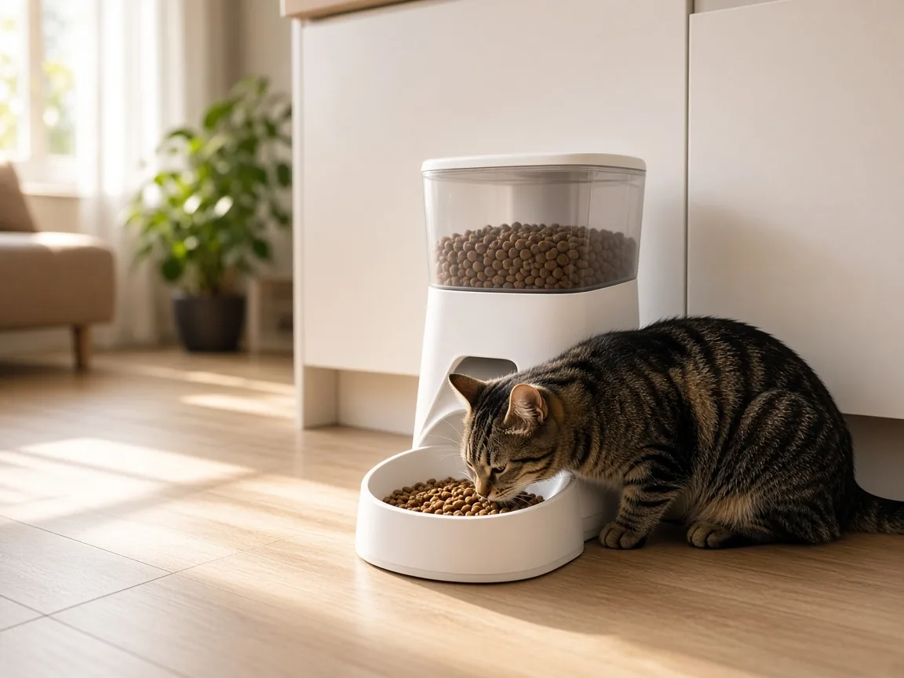

Distributeur de croquettes connecté : comment bien choisir ?

Un distributeur programmable sert des portions à heures fixes, même quand tu rentres tard. La version connectée ajoute le pilotage à distance, des alertes (bourrage, réservoir bas) et parfois une caméra. Idéal pour un chat d’appartement qui réclame à 5 h du matin.
Les critères
- Fiabilité de distribution : vérifie la taille de croquettes acceptée ; les grosses croquettes ou formes irrégulières peuvent bloquer.
- Alimentation de secours : piles ou batterie en plus du secteur, pour continuer à servir en cas de coupure. Sans Wi-Fi, le programme local doit continuer à fonctionner.
- Réservoir hermétique : joint et sachet déshydratant préservent les croquettes.
- Bol inox amovible : plus hygiénique, passe souvent au lave-vaisselle.
- Caméra : pratique pour voir si le chat mange, mais pose la question de la vie privée (où partent les images ? abonnement cloud ?).
- Multi-chats : un distributeur à deux bols ou un modèle à puce par chat si les régimes diffèrent.
Modèles à considérer
Petlibro (Granary, Air…)
Marque très présente sur ce segment, avec des versions Wi-Fi, à caméra et à double bol. Bonne option pour démarrer.
Voir sur AmazonPetKit Fresh Element
S’intègre à l’application PetKit avec la litière et la fontaine de la marque : tout est au même endroit.
Voir sur AmazonXiaomi Smart Pet Food Feeder
Pilotage via Xiaomi Home, design compact. Cohérent si tu as déjà la fontaine Xiaomi.
Voir sur AmazonAvec caméra
Plusieurs marques proposent un distributeur avec caméra intégrée. Vérifie si l’enregistrement nécessite un abonnement.
Voir sur AmazonLes limites
Un distributeur ne remplace pas une présence : au-delà d’un week-end, fais passer quelqu’un (litière, eau, santé). Teste le programme plusieurs jours en ta présence avant de compter dessus. Respecte la ration journalière conseillée par ton vétérinaire et répartis-la en petits repas.
Notre avis
Un modèle Wi-Fi avec batterie de secours et bol inox couvre l’essentiel. Prends une caméra seulement si elle te rassure vraiment. Associe-le à une fontaine à eau pour des absences sereines.
Liens affiliés Amazon : une commission peut être versée, sans surcoût pour toi.